この仕様は、矢印~keyを利用して~focusを~navigateするための一般~model, および関係する［
~CSS, ~JS特能, ~Event
］を定義する。
◎
This specification defines a general model for navigating the focus using the arrow keys, as well as related CSS, JavaScript features and Events.
次に挙げる特能は~risk下にあり，勧告候補~期間に落とされるかもしれません：
◎
The following features are at-risk, and may be dropped during the CR period:
`getSpatialNavigationContainer()$m
`focusableAreas()$m
`spatial-navigation-contain$p
`spatial-navigation-action$p 用の値 `scroll^v
1. 序論
~INFORMATIVE
歴史的に，ほとんどの~browserは、~focusをある方向へ移動する特能を利用者に提供していなかった。
~TV~browserなど，一部のものは、必要に迫られ，利用者が矢印~keyを利用して~focusを移動するのを可能化する
— 典型的な~TV~remote-controlには可用な入力の仕組みが他にないので。
◎
Historically, most browsers have not offered features to let users move the focus directionally. Some, such as TV browsers, have enabled users to move the focus using the arrow keys out of necessity, since no other input mechanism is available on a typical TV remote control.
その他ものは、空間的~naviを制御するための，異なる~key組合わせを可能化していた
— `Shift$kY ~keyと矢印~keyを一緒に~pressするなど。
◎
Others, have enabled different key combinations to control spatial navigation, such as pressing the Shift key together with arrow keys.
ある方向へ，頁を巡って移動するこの能は、
`空間的~navi@
と呼ばれる。
◎
This ability to move around the page directionally is called spatial navigation.
`空間的~navi$は、格子~状の~layoutその他のおよそ一次元的でない~layoutを利用して築かれた~web頁~用に有用になり得る。
下の図は、格子~layoutに配列された写真展示を表現する。
利用者が `Tab$kY ~keyを~pressして~focusを移動した場合、欲される要素へ到達するまで，~keyを何回も~pressする必要がある。
また，格子~layoutは、要素の~layoutを~source順序とは独立に配列し得る。
したがって `Tab$kY ~keyを利用する逐次的~naviによる~focus~naviを予測-不能にする。
対照的に，`空間的~navi$は、~focus可能な要素たちの間で，それらの位置に依存して~focusを移動することで、逐次的~naviに遭遇した問題に取組むことを許容している。
◎
Spatial navigation can be useful for a web page built using a grid-like layout, or other predominantly non linear layouts. The figure below represents a photo gallery arranged in a grid layout. If the user presses the Tab key to move focus, they need to press the key many times to reach the desired element. Also, the grid layout may arrange the layout of elements independently of their source order. Therefore sequential navigation using the Tab key makes focus navigation unpredictable. In contrast, spatial navigation moves the focus among focusable elements depending on their position allowing it to address problems encountered with sequential navigation.
`spatnav-enable^dgm
格子~状の~layoutを利用してている~app。
◎
Application using a grid-like layout.
矢印~keyは，空間的~naviを制御するには自然に適するが、それがどう働くベキで, どう制御されてヨイ／できるかを述べる仕様は，これまで無かった。
この仕様は、［
空間的~navi用の処理~model
］, および［
作者が，空間的~naviがどう働くかを［
制御する／上書きする
］ことを可能化する~API
］を導入する。
◎
While arrow keys are naturally suited to control spatial navigation, no previous specification describes how that should work, or how it may be controlled. This specification introduces a processing model for spatial navigation, as well as APIs enabling authors to control and override how spatial navigation works.
注記：
この仕様を成す一部の側面
— ~JS［
~Event／~API
］など —
は、逐次的~naviにも拡張できる
— ~keyboard~naviが一般に一貫する, かつ きちんと定義された~modelを必ず備えるようにするための。
◎
Note: Some aspects of this specification, such as the JavaScript Events and APIs could also be extended to sequential navigation, in order to make sure that keyboard navigation in general has a consistent and well defined model.
注記：
一般~原則として、~keyboard~navi, 特に空間的~naviは，~JSなしに利用したり制御することがアリになるベキであり、したがって宣言的な解決策が選好される。
空間的~naviは~layoutに依存するので、概して，~CSSが空間的~naviに関係する制御-を定義するための~rightな仕組みになることを意味する。
しかしながら，`拡張-可能な~Web$ `EXTENSIBLE$r の精神においては、~rightな~JS~primitiveを供して，作者に問題~空間を試験して探求してもらうことが重要であると感じられる。
後には、そのような~JS用法を通して獲得された~feedbackと経験に基づいて，より宣言的な特能が追加されるであろう。
◎
Note: As a general principle, keyboard navigation, and spatial navigation in particular, should be possible to use and control without JavaScript, and declarative solutions are therefore preferred. Since spatial navigation depends on layout, that means CSS is typically the right mechanism to define spatial navigation related controls. However, in the spirit of the Extensible Web Manifesto [EXTENSIBLE], we feel it is important to provide the right JavaScript primitives to let authors experiment and explore the problem space. More declarative features may be added later, based on feedback and experience acquired through such JavaScript usage.
注記：
少数の特能は、
`~risk下@
にあるとされる。
編集者は、それらが［
この仕様に定義される特能の利用者や作者による体験
］を成す重要な一部を表現すると予見している。
と同時に、この仕様を成す中核の機能性は，これらを実装せずに実装できるので、最初の実装の視野を抑制するため，実装者は それらの優先度を下げることもあり得ると見受けられる。
これらの特能は
— 実装されることになると希望されているが —
最優先でないかもしれない認識の下で，~risk下にあるとされる。
◎
Note: A few features are marked at-risk. The editors of this specification believe they represent an important part of the user or author experience of the features defined in the specification. At the same time, the core functionality of this specification can be implemented without implementing these so it seems possible that implementors may choose to down-prioritize them to reduce the scope of a first implementation. While it is hoped that these features will be implemented as well, they are marked at-risk in recognition that they might not be at first.
2. ~module間の相互作用
この文書は `infra$r に依存する。
◎
This document depends on the Infra Standard [infra].
【以下略：RFC 2119 が規定する句に利用される対訳を参照されたし。】
◎
The keywords "MUST", "MUST NOT", "REQUIRED", "SHALL", "SHALL NOT", "SHOULD", "SHOULD NOT", "RECOMMENDED", "NOT RECOMMENDED", "MAY", and "OPTIONAL" are to be interpreted as described in RFC 2119. [RFC2119]
~UAにより定義される仕組みを利用して（概して矢印~key，場合によっては `Shift$kY や `Control$kY の様な修飾keyとの組合わせで）、利用者は特定0の方向へ~navigateするよう~UAに依頼することもある。
これは、その現在の所在から要請された方向に~focus可能な新たな~itemが在れば，そこへ~focusを移動し、適切な~itemが無ければ~scrollすることになる。
◎
Using a UA-defined mechanism (typically arrow keys, possibly in combination with modifier keys like Shift or Control), the user may ask the User Agent to navigate in a particular direction. This will either move the focus from its current location to a new focusable item in the direction requested, or scroll if there is no appropriate item.
より特定的には、~UAは先ず，［
現在の`空間的~navi容器$の中で指示された方向にある，可視かつ~focus可能な~item
］を探索することになる
（`空間的~navi容器$は、既定では，［
根~要素, ~scroll可能な要素, ~iframe
］いずれかであるが、
`spatial-navigation-contain$p ~propを利用すれば，他の要素も`空間的~navi容器$を成すようにできる）。
◎
More specifically, the User Agent will first search for visible and focusable items in the direction indicated within the current spatial navigation container (by default the root element, scrollable elements, and iframes, but other elements can be made into spatial navigation containers using the spatial-navigation-contain property).
何かが見出された場合、その方向にある最良の 1 つを選取って，~focusをそこへ移動することになる。
◎
If it finds any, it will pick the best one for that direction, and move the focus there.
何も見出されなかった場合、~focusを移動する代わりに，要請された方向へ`空間的~navi容器$を~scrollすることになる。
その結果，~focus可能な要素が~~現れ得る
— その場合、次回に同じ方向へ空間的~naviが要請されたとき，それが~focusを移動する適格な標的になるであろう。
◎
If it does not, it will scroll the spatial navigation container in the requested direction instead of moving focus. Doing so may uncover focusable elements which would then be eligible targets to move the focus to next time spatial navigation in the same direction is requested.
［
~scroll可能な要素でないか，すでにその方向へ~scrollし切った
］ため，`空間的~navi容器$を~scrollできない場合、~UAは先祖上の連鎖を遡って次にある`空間的~navi容器$を選定して，何らかの［
~focus／~scroll
］可能な要素を見出すか，根~要素に到達するまで，上の処理-を再帰的に繰返すことになる。
◎
If the spatial navigation container cannot be scrolled, either because it is not a scrollable element or because it is already scrolled to the maximum in that direction, the User Agent will select the next spatial navigation container up the ancestry chain, and recursively repeat the above process until it finds some element to focus or scroll, or reaches the root element.
注記：
この処理~modelの帰結として、逐次的~naviにより到達-可能な要素たちは，空間的~naviにより到達-可能なものとほぼ同じになる。
現在~scroll可能な要素の表示域の外側にある要素へは、空間的~naviにより~viewの中へ~scrollされたときに限り到達できる。
したがって，~viewの中へ~scrollできない要素（例えば，負の~offsetに配置されているもの）は、空間的~naviでも到達できない。
◎
Note: As a consequence of this processing model, the elements that are reachable by sequential navigation and by spatial navigation are almost the same. Elements that are currently outside of the viewport of a scrollable element can only be reached by spatial navigation once they have been scrolled into view. Therefore, elements that cannot be scrolled into view (for example because they are placed at a negative offset) cannot be reached by spatial navigation.
この［
空間的~navi要請に対し適切な応答を得るため，探索する間
］の主要な箇所にて，~UAは~eventを発火することになる。
これらは、作者が来たる動作を防止すること（ `preventDefault()$m を~callして），および
欲されるなら代替~動作
— 作者が選んだ異なる要素に対し `focus()$m ~methodを利用するなど —
を供することを可能化する。
◎
At key points during this search for the appropriate response to the spatial navigation request, the User Agent will fire events. These enable authors to prevent the upcoming action (by calling preventDefault()), and if desired to provide an alternate action, such as using the focus() method on a different element of the author’s choosing.
作者がそのような代替~動作を書き易くするため、および`拡張-可能な~Web$ `EXTENSIBLE$r の原則の下に，下層の~platform~primitiveを公開する一部として、この仕様は，下層の~modelの主要な構成子を公開する~JS~APIも定義する。
◎
To help authors write such alternate actions, and as part of exposing underlying platform primitives as per the Extensible Web principles, this specification also defines JavaScript APIs that expose key constructs of the underlying model.
~JS~APIについての詳細は
§ ~JS~API ／
様々な~eventについての詳細は
§ ~navi~event型 ／
~CSS~propについての詳細は
§ 宣言的な手段による空間的~naviの制御-法
を見よ。
◎
See §5 JavaScript API for details about the JavaScript API, §6.2 Navigation Event Types for details about the various events, and §9 Controlling spatial navigation through declarative means for details about the CSS properties.
この例は、~scroll可能な要素~内に配列された一連の~focus可能な要素が，空間的~naviを利用して どう~navigateされるかを示す。
記述を単純に保つため、この例の空間的~naviは，矢印~keyを利用して誘発されるものと見做す。
【！User Agent where】
◎
This example shows how a series of focusable elements arranged in a scrollable element would be navigated when using spatial navigation. For the sake of keeping the description simple, this example assumes a User Agent where spatial navigation is triggered using arrow keys.
`spatnav-scroll-visible-1^dgm
`spatnav-scroll-visible-2^dgm
`空間的~navi容器$内の可視な要素へ，~focusを移動する。
◎
Moving focus to the visible element in the spatial navigation container.
上の図では、左端にある "Box 2" が~focusされている。
`ArrowDown$kY ~keyを~pressすると、~scrollすることなく，~focusは "Box 3" へ移動する
— "Box 3" は`空間的~navi容器$の`~scrollport$内に可視なので。
◎
On the left of figure 2, "Box 2" is focused. Pressing the ArrowDown key moves the focus to "Box 3" without scrolling because "Box 3" is visible in the scrollport of the spatial navigation container.
`spatnav-scroll-invisible-1^dgm
`spatnav-scroll-invisible-2^dgm
`spatnav-scroll-invisible-3^dgm
`spatnav-scroll-invisible-4^dgm
`空間的~navi容器$内にある隠れていた要素へ~focusを移動する様子。
◎
Moving focus to the hidden element in the spatial navigation container.
上の 1 個目の図において、`~scrollport$内には， "Box 3" の下には可視な要素は無い。
したがって， `ArrowDown$kY を~pressしたときの効果は、 2 個目の図に示されるように下へ~downへ~scrollする。
もう一回 `ArrowDown^kY ~keyが~pressされると `~scrollport$の中へ "Box 4" が来るようになり（ 3 個目の図）、さらにもう一回 `ArrowDown^kY が~pressされると，~focusは そこへ移動することになる（ 4 個目の図）。
◎
On the first of figure 3, under "Box 3", there isn’t any visible element in the scrollport. Therefore, the effect of pressing the ArrowDown is to scroll down, as shown in the second. The next press of the ArrowDown key makes "Box 4" come into the scrollport, and the focus will move to it when there is additional pressing the ArrowDown, as the fourth.
この例では、次の~markupが利用されている：
◎
This example uses the markup as follows:
利用者が所与の方向への空間的~naviを誘発するとき、~UAは，その方向への`空間的~navi手続き$を走らすモノトスル。
◎
When the user triggers spatial navigation in a given direction, the User Agent must run the spatial navigation steps in that direction.
この仕様は、~UAが［
空間的~naviを誘発する~UIの仕組み
］として何を利用者に提供するベキかは，定義しない。
これは、意図的に~UAの裁定に委ねられている。
◎
This specification does not define what UI mechanism User Agents should offer to users to trigger spatial navigation. This intentionally left for User Agents to decide.
注記：
［
~remote-controlで操作oされる~TV,
~feature-phone,
~game~controllerで操作oされている機器
］など，入力~能力が制限された機器~上の~UAは、第一の, または排他的な~naviの仕組みとして，空間的~naviを利用することになるものと期待される。
◎
Note: It is expected that User Agents on devices with limited input capabilities, such as TVs operated with a remote control, feature phones, or devices operated with a game controller, will use spatial navigation as their primary or exclusive navigation mechanism.
~UAにとっては，［
空間的~navi自体を直に誘発する手段を利用者に与えることなく，処理~model, 仕様に定義される~APIを実装する
］こともアリだが、この仕様は，そうしないことを推奨する。
~UAは、~APIを利用せずに直に空間的~naviを誘発する手段を，利用者に提供するベキである。
◎
Although it is possible for User Agents to implement the processing model and APIs defined by the specification without giving any direct means to the user to trigger spatial navigation themselves, this specification recommends not to do so: User Agents should offer a means for users to trigger spatial navigation directly, without having to use the APIs.
注記：
逆に，作者は、~APIを呼出さないときでも［
空間的~naviは、利用者~動作に呼応して，~UAにより誘発され得る
］ものと見做すベキである。
◎
Note: Conversely, authors should assume that spatial navigation may be triggered by the User Agent in response to user actions even if the author has not invoked any of the APIs.
空間的~naviを誘発するために選ばれる実際の仕組みに関わらず，次に挙げる要件が適用される：
◎
Regardless of the actual mechanism chosen to trigger spatial navigation, the following requirements apply:
空間的~naviを誘発するために利用者が利用しなければナラナイ仕組みが，通常は `UIEvent$I を発火する場合
⇒
`空間的~navi手続き$を走らすに先立って，その~eventを発火した上で、その~eventの`取消d~flag$が ~ON にされた場合には，この手続きを走らせないモノトスル。
◎
If the mechanism the user must use to trigger spatial navigation would normally fire a UIEvent, the event must be fired prior to running the spatial navigation steps and these steps must not be run if that event’s canceled flag gets set.
~game用~機器の十字キーが~pressされたとき、空間的~naviを誘発し得る。
これは、~keyが［
`ArrowDown$kY, `ArrowLeft$kY, `ArrowRight$kY, `ArrowUp$kY
］いずれかに設定された `keydown$et ~eventを発火する結果になる。
これが取消されなかった場合、`空間的~navi手続き$を走らす
— 関連する `NavigationEvent$I を発火することも含め。
◎
Gaming devices may trigger spatial navigation based on pressing the D-pad. This would result in firing a keydown event with the key set to one of ArrowDown, ArrowLeft, ArrowRight, or ArrowUp, followed if not canceled by running the spatial navigation steps, including firing the relevant NavigationEvents.
~keyboardの矢印~keyを利用して空間的~naviを誘発する，~desktop~computer上の~UAは、同じ連列に従うことになる。
◎
A User Agent on a desktop computer that triggers spatial navigation using the arrow keys of the keyboard would follow the same sequence.
空間的~naviを誘発するために利用者が利用しなければナラナイ仕組みが，何らかの文脈においては他の動作を誘発することになる場合、~UAは［
そのような文脈においては，それら他の動作に優先度を与えて、空間的~naviの代わりに，それらを実行する
］ベキであり，両者とも誘発しないモノトスル。
◎
If the mechanism the user must use to trigger spatial navigation would trigger other actions in some contexts, the User Agent should in these contexts give priority to these other actions and execute them instead of spatial navigation. It must not trigger both.
修飾keyなしの矢印~key利用して，空間的~naviを誘発し，同じ矢印~keyを~text挿入~caretを移動するためにも利用する~UAにおいて、編集-可能な要素に~focusされたときは，矢印~keyは，既定では~caretを移動するベキである。
空間的~naviは、［
~focusされた要素が編集-可能でないか、編集-可能であるが，~caretは要請された方向へそれ以上~移動できないとき
］に限り，矢印~keyにより誘発されることになる。
◎
In a User Agent that triggers spatial navigation using the arrow keys without modifier keys, and uses these same arrow keys to move the text insertion caret when an editable element is focused, the arrow keys should by default to moving the caret. Spatial navigation would only be triggered by the arrow keys when the focused element is not editable, or when it is editable but the caret cannot move any further in the requested direction.
ただし、~scrollingには例外がある：
空間的~navi自体は（~focusを移動することに加えて）~scrollingも取扱うので、~UAは，同じ仕組みを［
空間的~navi, 空間的~naviとは別々の~scrollingの挙動
］の両者を誘発するものとして提供するベキでない。
しかしながら，~UAは、［
それらの間で異なる~modeに切替える仕方，あるいは
異なる~UIの仕組みに基づいて両者
］を利用者に提供してもヨイ。
◎
An exception is made for scrolling: since spatial navigation itself handles scrolling (in addition to moving the focus) User Agents should not offer the same mechanism to trigger both spatial navigation and a scrolling behavior separate from spatial navigation. User Agents may however, offer a way for the user to switch between different modes, or offer both based on different UI mechanism.
~UAは、［
空間的~navi用, ~scrolling用
］のどちらに修飾keyなしの矢印~keyを利用するか，利用者に選んでもらう設定ngを備えることもあろう。
別の~UAは、［
~scroll用には修飾keyなしの矢印~key
］,
空間的~navi用には［
矢印~keyが `Shift$kY ~keyと一緒に~pressされたとき，あるいは［
`W^kY `A^kY `S^kY `D^kY
］~key
］を提供することもあろう。
矢印~keyを~pressしたときに［
空間的~navi, ~scrolling
］どちらかのみを応答として提供する可能性もある。
◎
A User Agent may have a setting to let the user choose between using the arrow keys without modifier keys for spatial navigation or for scrolling. Another one may offer scrolling on arrow keys without modifiers, and spatial navigation on arrow keys when pressed together with the Shift key, or on the W A S D keys. Offering only spatial navigation or only scrolling as responses to pressing arrow keys would also be possibilities.
5. ~JS~API
5.1. ~program的な~naviの誘発-法
`navigate()$m ~methodは、空間的~naviを~program的に誘発することを作者に可能化する
— 利用者が手動でそれを行なったかのように（一例として，矢印~keyが空間的~naviを誘発する仕方である~browser内で矢印~keyを~pressすることにより）。
◎
The navigate() method enables the author to trigger spatial navigation programmatically, as if the user had done so manually (for instance, by pressing the arrow keys in a browser where that is the way to trigger spatial navigation).
注記：
これは，手動~naviと同じ処理~modelを誘発するので、まったく同じ結果
— 同じ~eventの連鎖が発火され，同じ要素が［
~scroll／~focus
］されるよう —
になるベキと期待される。
◎
Note: As this triggers the same processing model as a manual navigation, all the same results should be expected: the same chain of events will be fired and the same element will be scrolled or focused.
注記：
これを利用すれば、作者は，~UAがアテガうものと異なる~UIの仕組みに基づいて空間的~naviを誘発できる
— ［
異なる~keyに対応付ける ／
~screen上の~click可能な十字キーから空間的~naviを誘発する ／
~UI以外の~eventに対する反応において
］など。
それはまた、作者が［
~naviを中断して，何らかの非同期的な演算を行って（例：無限~scroller内にもっと内容を読込む），取消した所から~naviを再開したい
］と求めるときにも利用できる。
◎
Note: Authors can use this to trigger spatial navigation based on a different UI mechanism than the one assigned by the User Agent, such as mapping to different keys, or triggering spatial navigation from a clickable on-screen directional pad, or in reaction to other events than UI ones. It could also be used when an author wants to interrupt navigation to do some asynchronous operation (e.g. load more content in an infinite scroller) then resume the navigation where they cancelled.
注記：
この~APIは、~testする目的にも有用になる
— ~vendorに特有な~UI規約に依存しない，空間的~naviを誘発する仕方は、他に無いので。
◎
Note: This API is also useful for testing purposes, as there is no other way to trigger spatial navigation that does not depend on vendor specific UI conventions.
被呼出時には、次を走らすモノトスル：
⇒
~IF［
%dir ~IN { `up^l, `down^l, `left^l, `right^l }
］
⇒
`空間的~navi手続き$( %dir )
◎
When the navigate(dir) method is called, the User Agent must run the following step:
• If dir is "up", "down", "left", or "right", run the spatial navigation steps in direction dir.
この~APIの名前は、論の最中にある
`3387$issue
◎
The name of this API is under discussion <https://github.com/w3c/csswg-drafts/issues/3387>
5.2. 低~levelな~API
注記：
これらの~APIは、処理~modelに近く従っている低~levelな構成子として設計されている。
そのようなわけで、それらは空間的~naviが働く仕方を拡張したり上書きしたいと求める作者に利用し易くあるベキである。
◎
Note: These APIs are designed to be low level constructs following the processing model closely. As such, they should be easy to use by authors who want to extend or override the way spatial navigation works.
注記：
方向を表出する仕方は、必要とされれば，後で上下左右~naviより拡げることも許容するようにしてある。
方向を表す~keywordや数量的な角度もさらに追加され得る。
◎
Note: The way the direction is expressed allows us to expand to more than 4-way navigation later of if this is found necessary. More directional keywords or a numerical angle could be added.
注記：
`focusableAreas()$m,
`getSpatialNavigationContainer()$m
~methodは`~risk下$にある。
◎
Note: the focusableAreas() and getSpatialNavigationContainer() methods are at-risk.
◎
When these methods are called, the User Agent must run the steps described below:
`getSpatialNavigationContainer()@m
被呼出時には、次を返すモノトスル
⇒
［
此れの先祖であって`空間的~navi容器$であるもの
］が［
在るならば それらのうち此れに最も近いもの ／
無いならば `文書$
］
◎
Return the nearest ancestor of the element that is a spatial navigation container, or the document if the nearest spatial navigation container is the viewport.
注記：
この要素~自身が`空間的~navi容器$であっても、先祖（または文書）を返す。
◎
Note: If the element is a spatial navigation container, getSpatialNavigationContainer() also returns the nearest spatial navigation container, not the element itself.
`focusableAreas(option)@m
被呼出時には、次を走らすモノトスル：
◎
↑↑
%可視のみ ~LET ［
%option ~EQ `all$l ならば ~F ／
~ELSE_ ~T
］
◎
Let visibleOnly be false if option is present and its value is equal to all, or true otherwise.
%~anchorたち ~LET `要素の中で~focus可能な区画を見出す$( 此れ, %可視のみ )
◎
Let areas be the result of finding focusable areas within the element with visibleOnly as argument.
◎
（cloneは不要）
Let anchors be a clone of areas,＼
%~anchorたち を成す
~EACH( %~focus可能な区画 )
に対し
⇒
~IF［
%~focus可能な区画 は`~node$でない
］
⇒
%~anchorたち の中で %~focus可能な区画 を［
%~focus可能な区画 の`~DOM~anchor$
］に`置換する$set
◎
with every focusable area which is not itself a Node replaced with its DOM anchor.
~RET %~anchorたち
◎
Return anchors
次の~codeは、
`focusableAreas()$m を利用して，現在の頁~内の可視かつ~focus可能な要素~すべてを取得する方法を示す。
~methodが`空間的~navi容器$を見出した場合、その内側にある`~focus可能な区画$たちを再帰的に見出す。
しかしながら、この~methodの `mode$m 属性は `visible^c に設定され，`~scrollport$の内側にない~focus可能な要素は結果から除外される。
◎
The following code shows how to get all the visible focusable elements in the current page using focusableAreas(). If the method finds a spatial navigation container, it recursively finds focusable areas inside it. However, as the mode attribute of this method is set to visible, the focusable element which isn’t inside the scrollport is excluded from the result.
この~codeの結果を下の図に示す：
◎
The figure below is the result of this code.
`focusableareas-visible-example^dgm
文書の内側にあるすべての可視かつ`~focus可能な区画$たちを見出す。
◎
Find all visible focusable areas inside the document.
`spatialNavigationSearch(options)@m
被呼出時には、次を走らすモノトスル：
◎
↑↑
%方向 ~LET %options の `dir$mSO 属性の値
◎
Let direction be the value of dir attribute of options.
~IF［
%options の `candidates$mSO 属性の値 ~NEQ ~NULL
］
⇒
%区画たち ~LET その値
◎
If the value of candidates attribute of options is not null, then let areas be the that value
~ELSE：
◎
else,
~IF［
%options の `container$mSO 属性の値 ~NEQ ~NULL
］
⇒
%容器 ~LET その値
◎
If the value of container attribute of options is not null, let container be that value
~ELSE
⇒
%容器 ~LET 此れの先祖の`空間的~navi容器$のうち要素に最も近いもの
◎
else, let container be the element’s nearest spatial navigation container ancestor.
%区画たち ~LET `要素の中で~focus可能な区画を見出す$( %容器 )
◎
Let areas be the result of finding focusable areas within container.
~RET `最良の候補を選定する$( %区画たち, %方向, 此れ )
◎
Return the result of selecting the best candidate within areas in direction direction from the element.
注記：
容器（ `container$mSO ）も候補の~list（ `candidates$mSO ）も供されていないとき、これは，［
先祖の`空間的~navi容器$のうち最も近いもの
］に限り，可視かつ`~focus可能な区画$たちを探索する。
`何もない場合、先祖上の連鎖を更に遡ることはなく，結果は ~NULL になる。^em
◎
Note: When neither a container nor a list of candidates is provided, this only searches through the visible focusable areas of the nearest spatial navigation container ancestor. If there isn’t any, this does not climb further up the ancestry chain, and the result will be null.
次の~codeは、空間的~naviの挙動を変更する
— ~scroll容器が~focusを取得したとき，可視かつ~focus可能な子孫が 1 個~以上あるならば、~focusは自動的にそこへ転送されるよう，再帰的に。
◎
The following code changes the behavior of spatial navigation so that when a scroll container would get focused, if it has at least one visible focusable descendant, the focus is automatically transferred to it, recursively.
次の~codeは、`空間的~navi容器$の中の~focusを捕えるよう，空間的~naviの挙動を変更する：
［
要請された方向には，~focus可能な要素はそれ以上~見出されない
］かつ［
`空間的~navi容器$はそれ以上~scrollできない
］ときは、~focusを容器の外側へ移動する代わりに，~~反対~側へ~loopして戻るようにする
— ~focusするか~scrollするか可用な方に依存して。
◎
The following code changes the behavior of spatial navigation to trap the focus within a spatial navigation container: when no further focusable elements can be found in the requested direction and the spatial navigation container cannot be scrolled any further, the focus loops back to the other side instead of moving outside of it, either by focusing or scrolling depending on what is available.
しかしながら、~focusは［
逐次的~navi／
~mouseによるヤリトリ ／
`focus()$m を~program的に~callする
］などにより，依然として外側へ移動できる。
◎
However, the focus can still be moved outside by sequential navigation, mouse interaction, or programmatic calls to focus()…
`NavigationEvent$I ~interfaceは、空間的~naviに特有の文脈~上の情報を供する。
◎
The NavigationEvent interface provides specific contextual information associated with spatial navigation.
`NavigationEvent$I ~interfaceの~instanceを作成するときは、
`NavigationEvent$I 構築子を利用する
— `NavigationEventInit$I 辞書（省略可）を渡して。
◎
To create an instance of the NavigationEvent interface, use the NavigationEvent constructor, passing an optional NavigationEventInit dictionary.
`この節とその下位節は規範的でない。^em
◎
This section and its subsections are not normative.
~navi~event型は、以下に要約される。
規範的かつ全部的な詳細は、
§ 処理~model
を見よ。
◎
The Navigation event types are summarized below. For full normative details, see §8 Processing Model.
6.2.1. `navbeforefocus^et
`navbeforefocus@et
~eventは、空間的~naviにより~focusが変化する前に生じる。
◎
The navbeforefocus event occurs before spatial navigation changes the focus.
◎
The DOM anchor of the focusable area that will be focused
◎
The direction of the navigation as requested by the user
◎表終
この例は、 `ArrowRight$kY ~keyを~pressしたときの`~event序列$を示す。
記述を単純に保つため、この例の空間的~naviは，矢印~keyを利用して誘発されるものと見做す。
◎
This example shows the UI Events §event-order when pressing the ArrowRight key. For the sake of keeping the description simple, this example assumes a User Agent where spatial navigation is triggered using arrow keys.
~event型
`KeyboardEvent$I.`key$m
備考
1
`keydown$et
`ArrowRight$kY
矢印~keyなどの，空間的~naviを作動化できる~keyでなければナラナイ。
他の場合、空間的~naviは作動化されない。
◎
MUST be a key which can activate spatial navigation, such as the arrow keys, or spatial navigation is not activated.
2
`navbeforefocus$et
空間的~navi用の候補が無い【！ is not null】の場合に送信される。
他の場合、これは生成されない。
◎
Sent if the candidates for spatial navigation is not null, or this is not generated.
3
`focusin$et
標的~要素が~focusを受取る前に送信される。
◎
Sent before the target element receives focus.
4
`focus$et
標的~要素が~focusを受取った後に送信される。
◎
Sent after the target element receives focus.
6.2.2. `navnotarget@et
`navnotarget$et ~eventは、空間的~naviが［
現在の`空間的~navi容器$の中の候補を見出すのに失敗した ／
`空間的~navi容器$は~scroll可能である所で更に~scrollできない
］とき，［
先祖の`空間的~navi容器$のうち最も近いもの内で候補たちを探索する
］ために木を遡ろうとする前に生じる。
◎
The navnotarget event occurs before going up the tree to search candidates in the nearest ancestor spatial navigation container when spatial navigation has failed to find any candidate within the current spatial navigation container, and in cases where the spatial navigation container is scrollable, when it cannot be scrolled further.
◎
The spatial navigation container that was searched in.
◎
The direction of the navigation as requested by the user
◎表終
この例は、次の図の様な状況において
`ArrowDown$kY ~keyが~pressされたときの`~event序列$を示す。
記述を単純に保つため、この例の空間的~naviは，矢印~keyを利用して誘発されるものと見做す。
◎
This example shows the UI Events §event-order when pressing the ArrowDown key in the situation like the following figure. For the sake of keeping the description simple, this example assumes a User Agent where spatial navigation is triggered using arrow keys.
`navnotarget-example-1^dgm
`~scroll容器$内に候補が無いときに、~focusを移動する様子。
◎
Moving focus when there isn’t any candidate in the scroll container.
~event型
~event標的
`relatedTarget^m
備考
1
`keydown$et
`#box2^c
N/A
矢印~keyなどの空間的~naviを作動化できる~keyでなければナラナイ。
他の場合、空間的~naviは誘発されない。
◎
MUST be a key which can activate spatial navigation, such as the arrow keys, otherwise spatial navigation is not triggered.
2
`navnotarget$et
`#box2^c
`#scrollContainer^c
`#scrollContainer^c が候補を包含しないかつ~scrollできない場合に送信される。
他の場合、これは生成されない。
◎
Sent if #scrollContainer doesn’t contain any candidate and cannot be scrolled, otherwise this would not be generated.
3
`navbeforefocus$et
`#box2^c
`#box3^c
`#container^c 内に候補が無い【！ is not null】場合に送信される。
他の場合、これは発火されない。
◎
Sent if the candidates in #container is not null, otherwise this would not be fired.
4
`focusin$et
`#box3^c
N/A
標的~要素が~focusを受取る前に送信される。
◎
Sent before the target element receives focus.
5
`focus$et
`#box3^c
N/A
標的~要素が~focusを受取った後に送信される。
◎
Sent after the target element receives focus.
この例の結果は、次のような図になる：
◎
The result of this example is the figure as follows:
`navnotarget-example-2^dgm
`~scrollport$内に候補が無く，`~scroll容器$も~scrollできないときには、~focusを移動する結果になる。
◎
The result of moving focus when there isn’t any candidate in the scrollport and scroll container cannot be scrolled.
この例では、次の~markupが利用されている：
◎
This example uses the markup as follows:
`~navi上書き@
は，`施策により制御される特能$であり、［
頁~作者が［
空間的~naviの挙動に対する制御を司る／空間的~naviを即座に取消す
］ことを可能化する仕組み
］の可用性を制御する。
◎
The navigation-override policy-controlled feature controls the availability of mechanisms that enables page authors to take control over the behavior of spatial navigation, or to cancel it outright.
この特能の名前は、`navigation-override^l とする。
◎
The feature name is "navigation-override"
`~navi上書き$用の`既定の許容list$は、 `'self'^l とする。
◎
The default allowlist for navigation-override is "self"
`§ ~navi$にて更なる詳細が定義されるように、
ある文書~内で`~navi上書き$が不能化された場合、~navi~event（
§ ~navi~event
を見よ）は発火されないことになる。
◎
As defined in further details in §8.2 Navigation, if navigation-override is disabled in a document, the navigation events (see §6 Navigation Events) will not be fired.
注記：
これは、敵対的な~iframeがこれらの~eventを利用して~focusを乗取ることを防止する。
空間的~navi以前に、悪意的な作者が［
~focusがどこへ行くか制御する，利用者の能
］に干渉することにも利用できるような他の仕組みが存在することは認識されている。
にもかかわらず、この攻撃~面を増やさない試みに~~価値はあると見受けられる
— そのような攻撃は、この試みを~~無為にするほど，すでに容易に遂行することがアリだが。
この論題に対し，実装の経験やそのような攻撃の軽減-法に基づく更なる~feedbackがあれば、ぜひ寄せてほしい。
◎
Note: This is to prevent a hostile iframe from using these events in order to highjack the focus. We recognize that there exist other mechanisms predating spatial navigation that malicious authors could use to interfere with the user’s ability to control where the focus goes. Despite that, it seems worthwhile to attempt not to increase this attack surface, although it is possible that such attacks are already sufficiently easy to perform that this is a lost cause. Further feedback on this topic, based on experience with implementation or with mitigating such attacks, is very welcome.
8. 処理~model
§ 概観
では、空間的~naviがどう働くか, および
この仕様の読者が頭の中に一般的な~modelを築き易くするための，高~levelな案を与えた。
それは，直感的だが精確でない各種用語を利用し、可読性のため多くの詳細を伏せていた。
◎
The §3 Overview section gives a high level idea of how spatial navigation works, to help readers of this specification build a general mental model. It uses intuitive but imprecise terminology, and glosses over many details for the sake of readability.
この節では、対応する規範的な挙動を定義し，その挙動を全部的に定義するために必要とされる詳細を与えることを目指す。
◎
This section defines the corresponding normative behavior and aims for as much detail as necessary to fully define the behavior.
`overscroll-behavior^p 仕様†
が現在~提案されているが、以下のものは，まだ それを織り込んでいない。
`3376$issue
【†現在は、草案として仕様~化されている。】
◎
The following currently does not account for the proposed overscroll-behavior specification. <https://github.com/w3c/csswg-drafts/issues/3376>
8.1. 要素の~group化
空間的~navi用の一般~modelは［
文書の~layout, ~focus可能な要素の相対的~位置
］から働くが、~UAには，局所的かつ論理的な~group化から優先的に要素を見出すことが要求される
— ~group化の内側で探してから、相応しいものを見出せなかったときに限り，外側で~focus可能な要素を探すように（詳細は`§ ~navi$を見よ）。
◎
While the general model for spatial navigation is to work from the layout of the document and the relative position of focusable elements, the User Agent is required to prioritize finding elements from a local logical grouping, only looking for focusable elements outside of the grouping if a suitable one cannot be found inside it (see §8.2 Navigation for details).
そのような~group化は、
`空間的~navi容器@
と呼ばれる。
◎
Such groupings are called spatial navigation containers.
既定では、`空間的~navi容器$は，次により確立される：
◎
By default, spatial navigation containers are established by:
`閲覧文脈$の表示域（`~top-level閲覧文脈$に制限されない）
◎
The viewport of a browsing context (not limited to the top-level browsing context)
`~scroll容器$
◎
scroll containers
`spatial-navigation-contain$p ~propを利用すれば、`空間的~navi容器$を追加的に作成できる
（
§ 追加的な空間的~navi容器の作成-法
を見よ）。
◎
Additional spatial navigation containers can be created using the spatial-navigation-contain property (see §9.1 Creating additional spatial navigation containers: the spatial-navigation-contain property).
8.2. ~navi
次の図は、規範的でない。
それは、この節に定義される更なる処理~modelの概観を与える
— `spatial-navigation-action$p ~propは初期~値 `auto$v をとると見做す下で。
◎
This figure is not normative. It gives an overview of the processing model further defined in this section, assuming that the spatial-navigation-action property has its initial value of auto.
`空間的~navi始点@
は、初期~時には ε （未設定）とする。
~UAは、利用者がそれを移動するベキと指示したときには，何かに設定してもヨイ。
◎
There can be a spatial navigation starting point. It is initially unset. The user agent may set it when the user indicates that it should be moved.
注記：
例えば~UAは、［
利用者が文書~内容~上で~clickしたときは ~clickした位置に設定する ／
（空間的~naviその他の手段により）~focusが移動されたときは ε に設定する
］こともできる。
◎
Note: For example, the user agent could set it to the position of the user’s click if the user clicks on the document contents, and unset when the focus is moved (by spatial navigation or any other means).
~UAは、［
`空間的~navi始点$,
`逐次的~focus~naviの始点$
］両者とも【非 ε に？】設定する場合，それらを同じ値に設定するモノトスル。
◎
If the User Agent sets both a spatial navigation starting point and a sequential focus navigation starting point, they must not be set differently.
`空間的~navi手続き@
は、所与の
( %方向 )
に対し，次を走らす：
◎
To run the spatial navigation steps in direction, do the following:
%探索~起点 ~LET `~top-level閲覧文脈の現在の被focus区画$の`~DOM~anchor$
◎
Let searchOrigin be the DOM anchor of the currently focused area of a top-level browsing context.
~IF［
`空間的~navi始点$ ~NEQ ε【！~NULL】
］~AND［
`空間的~navi始点$は %探索~起点 の内側にある
］
⇒
%探索~起点 ~SET `空間的~navi始点$
◎
If the spatial navigation starting point is not null and it is inside searchOrigin then set searchOrigin to the spatial navigation starting point.
◎
If searchOrigin is an node, let eventTarget be searchOrigin
◎
else (assert: searchOrigin is a position) let eventTarget be the node which contains searchOrigin
%文書 ~LET %~event標的 の`~node文書$
◎
↓
~IF［
%~event標的 は［
`文書$／`文書~要素$
］である
］
⇒
%~event標的 ~SET ［
%文書 の`~body要素$ ~NEQ ~NULL ならば それ ／
~ELSE_ %文書 の`文書~要素$
］
◎
If eventTarget is the Document or the document element, set eventTarget be the body element if it is not null or to the document element otherwise.
~IF［
%探索~起点 は`手動で~scrollできる$
【！ 不要：%探索~起点 は`~scroll容器$である】
］~AND［
%探索~起点 上の `spatial-navigation-action$p ~propの算出d値 ~EQ `scroll$v
］
⇒＃
`要素をある方向へ~scrollする$( %探索~起点, %方向 )；
~RET
◎
If searchOrigin is scroll container and the computed value of the spatial-navigation-action property on searchOrigin is scroll and searchOrigin can be manually scrolled, then directionally scroll the element searchOrigin and return.
~IF［
%探索~起点 は［
`~scroll容器$ ／ `文書$
］である
］：
◎
Else, if searchOrigin is either a scroll container or the document
%候補たち ~LET `要素の中で~focus可能な区画を見出す$( %探索~起点,
［
%探索~起点 上の `spatial-navigation-action$p ~propの算出d値 ~EQ `focus$v
ならば ~F ／
~ELSE_ ~T
］ )
◎
Let candidates be the result of finding focusable areas within searchOrigin with the argument set to false if computed value of the spatial-navigation-action property on searchOrigin is focus or to true otherwise.
~IF［
%候補たち は空でない
］：
◎
If candidates contains at least 1 item:
%最良の候補 ~LET
`最良の候補を選定する$( %候補たち, %方向, %探索~起点 )
◎
Let bestCandidate be the result of selecting the best candidate within candidates in direction starting from searchOrigin
~IF［
`文書~内の特能は生成元~用に可能化されるか？$(
`navigation-override$l,
%文書,
`~top-level閲覧文脈$にて`作動中の文書$の`生成元$
) ~EQ `可能化される^i
］：
◎
If navigation-override is enabled in the node document of eventTarget for the origin of the active document of the top-level browsing context, then＼
%~event標的 に向けて名前 `navbeforefocus$et の`~eventを発火する$
— `NavigationEvent$I を利用して，次のように初期化して
⇒＃
`dir$m ~SET %方向,
`relatedTarget$m ~SET %最良の候補,
`bubbles^m 属性 ~SET ~T,
`cancelable^m 属性 ~SET ~T
◎
fire an event named navbeforefocus at eventTarget using NavigationEvent with:
• dir set to direction
• relatedTarget set to bestCandidate
• the bubbles and cancelable attributes set to true
~IF［
前~段の結果 ~EQ ~F
］
⇒
~RET
◎
and return if the result is false.
`~objを~focusする$( %最良の候補 )
◎
Run the focusing steps for bestCandidate and＼
◎
Else if the computed value of the spatial-navigation-action property on eventTarget is not focus and eventTarget can be manually scrolled, then directionally scroll the element eventTarget in direction and return.
◎
Else, fallback to the next step.
%容器 ~LET ［
%~event標的 の先祖である`空間的~navi容器$のうち， %~event標的 に最も近いもの
］
◎
Else, fallback to the next step.
◎
Let container be the nearest ancestor of eventTarget that is a spatial navigation container.
%候補たち ~SET `要素の中で~focus可能な区画を見出す$( %容器, %可視のみ )
【！excluding searchOrigin 不要？】
◎
Let candidates be the result of finding focusable areas within container with the argument set to false if computed value of the spatial-navigation-action property on container is focus or to true otherwise, excluding searchOrigin
~IF［
%候補たち は空でない
］
⇒
~BREAK
◎
If candidates is empty:
◎
If the computed value of the spatial-navigation-action property on container is not focus and container is a scroll container that can be manually scrolled, directionally scroll the element container in direction and return.
◎
Else,
~IF［
`文書~内の特能は生成元~用に可能化されるか？$(
`navigation-override$l,
%~event標的 の`~node文書$,
`~top-level閲覧文脈$にて`作動中の文書$の`生成元$
) ~EQ `可能化される^i
］：
◎
If navigation-override is enabled in the node document of eventTarget for the origin of the active document of the top-level browsing context, then＼
%~event標的 に向けて名前 `navnotarget$et の`~eventを発火する$
— `NavigationEvent$I を利用して，次のように初期化して
⇒＃
`dir$m ~SET %方向,
`relatedTarget$m ~SET %容器,
`bubbles^m 属性 ~SET ~T,
`cancelable^m 属性 ~SET ~T
◎
• dir set to direction
• relatedTarget set to container
• the bubbles and cancelable attributes set to true
◎
fire an event named navnotarget at eventTarget using NavigationEvent with:
~IF［
前~段の結果 ~EQ ~F
］
⇒
~RET
◎
and return if the result is false.
◎
If container is the document element of the top-level browsing context, then return. The User Agent may transfer focus to its own controls (if any) honouring direction.
◎
Else, if container is the document element of a nested browsing context then:
• Set searchOrigin to container’s browsing context container
• Set eventTarget be searchOrigin
• Set container to the nearest ancestor of searchOrigin that is a spatial navigation container.
• Return to the step labeled loop.
%容器 ~SET %容器 の先祖である`空間的~navi容器$のうち %容器 に最も近いもの
◎
Else, set container to its closest ancestor that is itself a spatial navigation container and return to the step labeled loop.
%最良の候補 ~LET
`最良の候補を選定する$( %候補たち, %方向, %探索~起点 )
◎
Let bestCandidate be the result of selecting the best candidate within candidates in direction starting from searchOrigin.
~IF［
`文書~内の特能は生成元~用に可能化されるか？$(
`navigation-override$l,
%~event標的 の`~node文書$,
`~top-level閲覧文脈$にて`作動中の文書$の`生成元$
) ~EQ `可能化される^i
］：
◎
If navigation-override is enabled in the node document of eventTarget for the origin of the active document of the top-level browsing context, then＼
%~event標的 に向けて名前 `navbeforefocus$et の`~eventを発火する$
— `NavigationEvent$I を利用して，次のように初期化して
⇒＃
`dir$m ~SET %方向,
`relatedTarget$m ~SET %最良の候補,
`bubbles^m 属性 ~SET ~T,
`cancelable^m 属性 ~SET ~T
◎
fire an event named navbeforefocus at eventTarget using NavigationEvent with:
• dir set to direction
• relatedTarget set to bestCandidate
• the bubbles and cancelable attributes set to true
~IF［
前~段の結果 ~EQ ~F
］
⇒
~RET
◎
and return if the result is false.
`~objを~focusする$( %最良の候補 )
◎
Run the focusing steps for bestCandidate and return.
8.3. ~focus~naviの経験則
注記：
次の~algoは、 Chrome の実装, および
旧 WICD 仕様
から着想されている。
これらの~approachより良い~approachや精緻化を見出した実装者には
— この仕様の改善を~~促して，相互運用能を最大化するため —
~feedbackを供することが強く奨励される。
特に，~UAが`要素の中で~focus可能な区画を見出す$方法に分岐があると、何らかの要素が~focus可能かどうかが~UAごとにまちまちになり，利用者にとって不都合になる。
◎
Note: The following algorithms are inspired from Chrome’s implementation as well as from the old WICD Spec. Implementors who find better approaches or refinements to these approaches are strongly encouraged to provide feedback and help improve this specification in order to maximize interoperability. In particular, divergences in how User Agents find focusable areas may cause some elements to be focusable in some User Agents but not in others, which would be bad for users.
この節における幾何-演算は、すべて，~CSS~layoutの結果に対し働くよう定義される
— `相対~位置決め$や `CSS-TRANSFORMS-1$r などの すべての~graphic的な変形nも含めて。
◎
All geometrical operations in this section are defined to work on the result of CSS layout, including all graphical transformations, such as relative positioning or [CSS-TRANSFORMS-1].
~objの
`境界~box@
は、~objに応じて，次に従って定義される：
◎
The boundary box of an object is defined as follows:
~objは~pointである場合
⇒
その~point
◎
if the object is a point, the boundary box is that point
~objは［
`~box$／`~box断片$
］である場合
⇒
~objの`~border~box$
◎
if the object is a box or box fragment, the boundary box is the border box of that box or fragment.
~objは`~focus可能な区画$であって要素でない場合
⇒
~objの限界~box
— その各~辺は軸に平行な
◎
if the object is a focusable area which is not an element, the boundary box is the axis-aligned the bounding box of that focusable area
~CSSには
“`border-radius^p の様な隅~形状付け~propを織り込んだ~border~box”
用の用語があるベキである。
`2324$issue
◎
CSS should have a term for “border box taking into account corner shaping properties like border-radius”. <https://github.com/w3c/csswg-drafts/issues/2324>
`要素の中で~focus可能な区画を見出す@
ときは、所与の
( 要素 %C, 真偽値 %可視のみ （省略時は ~T ）)
に対し，次の手続きを走らす：
◎
To find focusable areas within a containing element C, with an optional visibleOnly argument that defaults to true, run the following steps:
%~focus可能~集合 ~LET ［
`~focus可能な区画$のうち，その`~DOM~anchor$は %C の子孫であるもの
］からなる`有順序~集合$
— ただし、`~box$が何個かの`~box断片$からなる事例では，各`~box断片$を別個のものと見なす。
◎
Let focusables be the set of all the focusable areas whose DOM anchor are descendants of C. In the case of boxes with several box fragments, each box fragment is considered separately.
~UAは、次を行うベキである
⇒
%~focus可能~集合 から次を満たす~itemを`除去する$
⇒
~itemの`~DOM~anchor$の `tabindex$a 属性は負の値に設定されている
◎
The User Agent should remove from focusables items that have a DOM anchor whose tabindex attribute is set to a negative value.
注記：
これが、 “ベキ” とされているのは、`逐次的~focus~navi順序$からの［
負の~tabindexを伴う要素の除外
］を~~反映するためである。
`HTML$r の `tabindex^a にて定義されるように
【`~tabindex値$を見よ】
。
◎
Note: This is a "SHOULD" in order to mirror the exclusion of elements with negative tabindex from the sequential focus navigation order as defined in HTML Standard §attr-tabindex.
~IF［
%可視のみ ~EQ ~F
］
⇒
~RET %~focus可能~集合
◎
If visibleOnly is false, return focusables.
注記：
%~focus可能~集合 は空になることもある。
◎
Note: focusables may be empty
%内側~区画 ~LET %C に応じて
⇒＃
`~scroll容器$であるならば %C の`最適な~view用~領域$／
~ELSE_ `文書$であるならば %C の`閲覧文脈$の表示域 ／
~ELSE_ %C の`~border~box$
◎
Let insideArea be
• the optimal viewing region of C if C is a scroll container,
• the viewport of C’s browsing context if C is a Document,
• the border box of C otherwise.
%可視~集合 ~LET %~focus可能~集合 から次に該当する~itemは除去する
⇒
その`境界~box$は %内側~区画 の中に一部でも入らないもの
◎
Let visibles be the subset of items in focusables whose boundary box is at least partly within insideArea.
~scroll容器~内で現在~可視でない要素は除き、空間的~naviは，~clickできない要素
— 例えば，他の要素により遮られていることに因り —
を自動的に除外しない。
［
利用者が そのような要素を実際に~focusして作動化した場合に，~app~logicにおける前提を壊すのを避ける
］ため，および［
不可視あるいは外見的に到達-不能な要素に~focusして，利用者を惑わすのを避ける
］ためには、作者は［
要素を逐次的~naviから到達-不能にするのと同じ最善の実施
］を利用して，これらの要素を空間的~naviから到達-不能にするベキである
— `tab-index="-1"^c や `inert$a 属性 などを利用して。
◎
Except for elements that are in the currently non visible part of a scroller, spatial navigation does not automatically exclude elements which cannot be clicked on, for example due to being obscured by some other element. To avoid breaking assumptions in the application logic if a user actually focuses and activates such an element, and to avoid confusing users by focusing invisible or apparently unreachable elements, authors should use make these elements unreachable to spatial navigation using the same best practices as for making elements unreachable to sequential navigation, such as using tab-index="-1" or the inert attribute.
~RET %可視~集合
◎
Return visibles.
注記：
%可視~集合 は空になることもある。
◎
Note: visibles may be empty
`最良の候補を選定する@
ときは、所与の
( `有順序~集合$ %候補たち, 方向 %方向, %探索~起点 )
に対し，次の手続きを走らす：
◎
To select the best candidate within a set of candidates in a direction dir, starting from searchOrigin, run the following steps:
~IF［
%候補たち は`空$である
］
⇒
~RET ~NULL
◎
If candidates is empty, return null
~IF［
%候補たち は 1 個の~itemのみからなる
］
⇒
~RET その~item
◎
If candidates contains a single item, return that item
%内側~区画 ~LET %探索~起点 に応じて
⇒＃
`~scroll容器$であるならば %探索~起点 の`最適な~view用~領域$／
~ELSE_ `文書$であるならば表示域 ／
~ELSE_ %C の`~border~box$
◎
Let insideArea be
• the optimal viewing region of searchOrigin if searchOrigin is a scroll container,
• the viewport if searchOrigin is a Document,
• the border box of searchOrigin otherwise.
%内側にあるものたち ~LET %候補たち を成す~itemのうち，次を満たすものからなる下位集合
⇒
［
その`~DOM~anchor$は %探索~起点 の子孫である
］~AND［
その`境界~box$は %方向 に応じて次を満たす
］：
◎
Let insiders be the subset of candidates items whose DOM anchor are descendants of searchOrigin and whose boundary box’s
`down$l
⇒
上端~辺は %内側~区画 の上端~辺より下にある
◎
top edge is below the top edge of insideArea if dir is down
`up$l
⇒
下端~辺は %内側~区画 の下端~辺より上にある
◎
bottom edge is above the bottom edge of insideArea if dir is up
`left$l
⇒
右端~辺は %内側~区画 の右端~辺より左端にある
◎
right edge is left of the right edge of insideArea if dir is left
`right$l
⇒
左端~辺は %内側~区画 の左端~辺より右端にある
◎
left edge is right of the left edge of insideArea if dir is right
注記：
この下位集合~化は、要請された方向の反対へ行くのを避けるために必要とされる。
◎
Note: this sub-setting is necessary to avoid going in the opposite direction than the one requested.
~IF［
%内側にあるものたち は空でない
］
⇒
◎
If insiders is non empty,
%最も近いものたち ~LET
%内側にあるものたち を成す~itemのうち［
その`境界~box$は %方向 に応じて次を満たすものからなる下位集合
］：
◎
Let closest subset be the subset of insiders whose boundary box’s
`down$l
⇒
上端~辺は %内側~区画 の上端~辺に最も近い
◎
top edge is closest to the top edge of insideArea if dir is down
`up$l
⇒
下端~辺は
%内側~区画 の下端~辺に最も近い
◎
bottom edge is closest to the bottom edge of insideArea if dir is up
`left$l
⇒
右端~辺は
%内側~区画 の右端~辺に最も近い
◎
right edge is closest to the right edge of insideArea if dir is left
`right$l
⇒
左端~辺は
%内側~区画 の左端~辺に最も近い
◎
left edge is closest to the left edge of insideArea if dir is right
%最も近いものたち から次を満たす~item %A をすべて除去する†
⇒
%最も近いものたち 内に別の~item %B が在って，次を満たす
⇒
［
%A, %B の`境界~box$は重合する
］~AND［
%A より %B の方が`~CSS塗ng順序$において上層にある
］
◎
If closest subset contains a single item, return that item, else return the first item of closest subset in document order, unless its boundary box overlaps with the boundary box of another item and that item is higher in the CSS painting order. In that case, return that item instead, unless it too is overlapped with another higher item, recursively.
%候補たち から次を満たす~itemを除去する
⇒
~itemの`境界~box$の幾何的な中心は、次を満たす境界を伴う閉半平面の中にない
⇒
［
%探索~起点 の幾何的な中心を通る
］~AND［
%方向 に垂直
］
◎
Set candidates be the subset of its items whose boundary box’s geometric center is within the closed half plane whose boundary goes through the geometric center of the searchOrigin and is perpendicular to dir.
%候補たち を成す
~EACH( %候補 )
に対し
⇒
%候補 の `距離^i ~SET `最短~距離を見出す$( %探索~起点, %候補, %方向 )
◎
For each candidate in candidates, find the shortest distance between searchOrigin and candidate in direction dir.
%候補たち から次を満たす~itemをすべて除去する
⇒
%候補たち 内の別の~itemより `距離^i が長い
◎
Return the item of the candidates set that has the smallest distance.＼
%候補たち から次を満たす~item %A をすべて除去する
⇒
%候補たち 内に別の~item %B が在って，次を満たす
⇒
［
%A, %B の`境界~box$は重合する
］~AND［
%A より %B の方が`~CSS塗ng順序$において上層にある
］
◎
If several have the same distance, return the first one in document order, unless its boundary box overlaps with the boundary box of an other item at the same distance, and that item is higher in the CSS painting order. In that case, return that item instead, unless it too is overlapped with another higher item at the same distance, recursively.
~RET %候補たち 内の文書~順序で最初の~item
◎
↑
`最短~距離を見出す@
ときは、所与の
( %基準, %候補, %方向 )
に対し，［
%基準 の境界~box ／ %候補 の境界~box
］の中にある~point［
%P1 ／ %P2
］を見出す
— 次に定義される %距離 を最小化するような
⇒
%距離 ~EQ %~euclidean距離 ~PLUS %転移 ~MINUS %整列 ~MINUS %重合する面積の平方根
◎
To find the shortest distance between a reference and a candidate in direction dir, find the points P1 and P2, respectively within the boundary boxes of the reference and of the candidate, that minimize the distance as defined as below:
• distance = euclidean + displacement - alignment - sqrt(Overlap)
各~項の意味は、以下に従う：
◎
The meaning of each term is as follows:
%~euclidean距離
%P1 から %P2 までの~euclidean距離
◎
The euclidean distance between P1 and P2
%転移
［
%基準, %候補
］どうしの %方向 における転移の度合い【直交-方向におけるずれ】
⇒
%転移 ~EQ ( ( %方向 に直交する軸における %P1 から %P2 までの絶対-距離 )
~PLUS %直交-偏り ) ~MUL %直交-重み
◎
The degree of displacement in dir between the reference and the candidate, defined as
◎
displacement = (absolute distance on the axis orthogonal to dir between P1 and P2 + orthogonalBias) * orthogonalWeight
%直交-偏り
%方向 に応じて：
`left$l ／ `right$l
⇒
%基準 の限界~boxの縦幅 ~DIV 2
`up$l ／ `down$l
⇒
%基準 の限界~boxの横幅 ~DIV 2
限界~boxの各~辺は、軸に平行とする
◎
If the dir is left or right, the height of the axis-aligned bounding box of reference / 2
◎
Else if the dir is up or down, the width of the axis-aligned bounding box of reference / 2
%直交-重み
%方向 に応じて：
`left$l ／ `right$l
⇒
30
`up$l ／ `down$l
⇒
2
【この相違が何に由来するのかは不明。仮に，横組みにおける行の方向に起因するならば、縦組みの下では入れ替える必要があろう。】
◎
If the dir is left or right, 30
◎
Else if the dir is up or down, 2
%整列
%方向 における %基準, %候補 どうしの整列の度合い
⇒
%整列 ~EQ %整列-偏り ~MUL %整列-重み
◎
The degree of alignment in dir between the reference and the candidate, defined as:
• alignment = alignBias * alignWeight
◎
If the dir is left or right, projectedOverlap / height of the axis-aligned bounding box of reference
◎
Else if the dir is up or down, projectedOverlap / width of the axis-aligned bounding box of reference
◎
If the dir is left or right, the length of the overlap between the horizontal projections onto the vertical axis of the reference and the candidate
◎
Else if the dir is up or down, the length of the overlap between the vertical projections onto the horizontal axis of the reference and the candidate
%基準, %候補 が［
重合するならば その面積の平方根 ／
重合しないならば 0
］
◎
The square root of area of overlap between the reference and the candidate, or 0 if they do not overlap.
注記：
この一般~公式は、いくつかの，良さげな代替から選取られた
— 一連の
利用者~体験~test事例
にて、最良の候補を選定するために利用されるとき，最も直感に合致するものに基づいて。
同様に，
%整列-重み, %直交-重み
の値も同じ~test事例に基づいて試験的に決定された。
結果の公式は、いくぶん複雑ではあるが，良い答えを与えるように見受けられる。
改善や単純~化の示唆があれば寄せてほしい。
◎
Note: This general formula was picked from several plausible alternatives, based on which one most often match intuition when used to select the best candidate in a series of UX test cases. Similarly, the values of alignWeight and orthogonalWeight were also determined experimentally based on the same test cases. The resulting formula is somewhat complicated, but seems to give good answers. Suggestions on improvements or simplifications are welcome.
当の要素は`~scroll容器$である場合に限り，`空間的~navi容器$を確立する
◎
If the element is a scroll container then it establishes a spatial navigation container, otherwise it does not.
`contain@v
当の要素は`空間的~navi容器$を確立する
◎
The element establishes a spatial navigation container
注記：
加えて、§ 要素の~group化に従い，`閲覧文脈$（`~top-level閲覧文脈$に制限されない）の表示域も`空間的~navi容器$を確立する。
◎
Note: In addition, as per §8.1 Groupings of elements, the viewport of a browsing context (not limited to the top-level browsing context) also establishes a spatial navigation container.
次の例は、単純~化された~TV番組表を示す。
それは、番組を表現している要素たちが成す格子があり，その周りにいくつか~UI~buttonを備える。
◎
The following example shows a simplified TV program schedule or calendar. It has a grid of elements representing TV shows or calendar entries, and some UI buttons around it.
この事例では，格子の中はスカスカである。
なので、利用者が "Foo" から~downへ移動しようと試行した場合、~focusは "次週" へ移動することになる
— それが~down方向において~~目的により近いので。
同じことは "Bar" から ~downへ行くときも該当し、~focusは "前週" へ移動することになる。
◎
In this case, the grid is quite sparse, so if the user tries to move down from "Foo", focus would be moved to "Next Week", as it is objectively closer in the down direction. The same is true for going down from "Bar": the focus would be moved to "Previous Week".
~table内の要素たちは，互いに意味論的に関係するので、作者は，格子~内の~itemが~focusされたとき，格子の内側における動きの優先度を与えて，異なる~navi体験を供したいと求めることもあろう。
◎
Because the elements in the table are semantically related to each other, the author may want to provide a different navigation experience giving priority to movements inside the grid once you have focused one of its items.
~stylesheetに
`table { spatial-navigation-contain: contain; }^css
を追加すれば、結果は この挙動になる。
~focusを~tableの外へ移動することも，依然としてアリになる。
例えば， "Foo" から右へ行くことにより。
格子~内には右には何もないので，~focusは "次週" へ移動することになる。
◎
Adding table { spatial-navigation-contain: contain; } to the stylesheet would result this behavior. It would still be possible to move the focus out of the table, for example by going right from "Foo". Since there is nothing in the grid that is to the right, the focus would move to "Next week".
しかしながら，利用者が "Foo" から~downへ~navigateした場合、格子の内側に何かがあるので，~focusはそこへ移動することになる
— 外側にあるものを考慮することなく。
◎
However, if the user navigates down from "Foo", there is something inside the grid, so focus will move there without considering things that are outside.
注記：
`spatial-navigation-contain$p ~propは`~risk下$にある。
◎
Note: the spatial-navigation-contain property is at-risk.
~focusが~scroll容器の内側にあって，
利用者が空間的~naviを誘発したとき、利用者が
— ~focusをその方向へ移動するのか, 文書をその方向へ~scrollするのか —
どちらを要請しているのか，いくぶん多義的になる。
これは，既定では自動的に決定されるが、この~propは，
~focusするのか, ~scrollするのか裁定することを作者に許容する。
◎
When the focus is inside of a scroll container and the user triggers spatial navigation, it is somewhat ambiguous whether they are requesting that the focus be moved in that direction, or whether the document should be scrolled in that direction. By default, this is automatically determined, but this property allows the author to decide between focusing or scrolling.
精確な挙動は`§ ~navi$に定義されるが、各~値による効果の高~levelな記述は下に供される。
◎
The precise behavior is defined in §8.2 Navigation, but a high level description of the effect of each value is provided below.
空間的~naviが誘発されたときの挙動は、［
現在~focusされている要素, またはその先祖
］のうち要素に最も近い`~scroll容器$の `spatial-navigation-action$p の値に依存する。
◎
When spatial navigation is triggered, the behavior depends on the value of the spatial-navigation-action on the currently focused element if that element is a scroll container, or of its nearest scroll container ancestor if it isn’t.
`auto@v
`~scroll容器$の中の要請された方向に，可視かつ~focus可能な要素が在る場合、それらのうち最も近いものが~focusされるようになる。
他の場合、`~scroll容器$は要請された方向へ~scrollされる。
◎
If there are visible focusable elements within the scroll container in the direction requested, the closest one becomes focused. Otherwise, the scroll container is scrolled in the direction requested.
`focus@v
`~scroll容器$の中【の要請された方向】に，~focus可能な要素が在れば
— それが可視かどうかに関わらず —
~focusは，それらのうち最も近いものへ移動される。
無い場合、~scroll容器は`~scrollされない^emことに加え、探索は先祖上の連鎖へ遡るように継続される。
◎
The focus is moved to the nearest focusable element within the scroll container, regardless of whether it is visible. If there are none, the scroll container is not scrolled, and the search continues up the ancestry chain instead.
注記：
`~scroll容器$は、直には~scrollされない
— それまで~viewになかった要素を~focusすることによる副作用として，~scrollされることはあるが。
◎
Note: The scroll container may be scrolled as a side effect of focusing an element which was previously not in view, but it will not be scrolled directly.
注記：
`spatial-navigation-action$p に `focus$v 値を与えた場合、`空間的~navi容器$の表示域の中で，所与の方向に可視な候補が無いときは， `navnotarget$et ~eventが生じる
— 当の容器をもっと~scrollできるときでも。
◎
Note: If the focus value is given to spatial-navigation-action, navnotarget event occurs when there isn’t any visible candidate in the given direction within the viewport of the spatial navigation container even if the container can be scrolled more.
`scroll@v
現在~focusされている要素が`~scroll容器$でない場合、先祖`~scroll容器$上のこの値は `auto$v と同じ効果になる。
◎
If the currently focused element is not itself a scroll container, this value on an ancestor scroll container has the same effect as auto.
現在~focusされている要素が`~scroll容器$である場合、~focus可能な子孫の有無に関わらず，要請された方向に~scrollされ、どの要素が~focusされているかは変更しない。
◎
If the currently focused element is a scroll container, it is scrolled in the direction requested without changing which element is in focus, regardless of the presence of focusable descendants.
注記：
このことは、［
~focusを`~scroll容器$へ移動して，そこへ~scrollしつつ、その子孫へは~focusを移動しない
］ことに，空間的~naviを利用できることを意味する。
しかしながら，~focusが他の何らかの手段（
`Tab$kY ~keyを~pressしたり， `focus()$m ~methodを利用するなど
）により子孫に移動された場合は、空間的~naviは，~focusを他の~focus可能な子孫へ移動することに利用され得る。
◎
Note: This means that spatial navigation can be used to move the focus to a scroll container and to scroll it, but not to move the focus to its descendants. However, if the focus is moved to a descendant by some other mean (such as pressing the Tab key or using the <focus()> method) spatial navigation can be used to move the focus to other focusable descendants.
注記：
`scroll^v 値は`~risk下$にある。
◎
Note: The scroll value is at-risk.
注記：
この仕様の早期の~versionは、［
`focus$v により定義される挙動を任意選択で~~選ぶための宣言的な仕方
］を提供していなかった代わりに，作者がその挙動を自身で実装できるよう［
~scrollする前に発火される取消~可能な~event
］を提供していた。
しかしながら，~scrollingに関係する取消~可能な~eventは処理能の問題をもたらし得るので、この~eventは除去され，代わりに `spatial-navigation-action$p ~propが導入された。
◎
Note: Earlier version of this specification did not offer a declarative way to opt into the behavior defined by focus, and instead offered a cancellable event that would be fired before scrolling, so that authors could implement that behavior themselves. However, cancellable events related to scrolling can cause performance problems, so this event was removed and the spatial-navigation-action property was introduced instead.
この例においては、ある~scroll可能な容器の `spatial-navigation-action$p に `focus^v が指定されている。
容器の内側には、`~scrollport$の中の~viewの外に要素がある。
~down矢印~keyを~pressすると，~focusは直にそこへ移動する
— 手動で~scrollしなくとも。
◎
In this example, a scrollable container is specified with spatial-navigation-action: focus. Inside the container, there is an element which is out of the view within a scrollport. Pressing the down arrow key moves the focus directly to it without scrolling manually.
`spatnav-action^dgm
手動で~scrollすることなく，~focusを "Box 2" から "Box 3" へ移動する
◎
Moving focus from "Box 2" to "Box 3" without manually scrolling
この節は、~CSSに対する少数の拡張を提案する。
それは，上流~仕様に統合されるベキであるが、それまでは，ここに~hostされる。
◎
This section proposes a few extensions to CSS that should be integrated in upstream specifications, but are hosted here until then.
この様な各種用語は、
`CSSOM-VIEW-1$r,
`CSS-OVERFLOW-3$r,
`CSS-SCROLL-SNAP-1$r
にて与えられる~ベキである。
`2322$issue
◎
Terminology like this should be in [CSSOM-VIEW-1], [CSS-OVERFLOW-3], [CSS-SCROLL-SNAP-1]. <https://github.com/w3c/csswg-drafts/issues/2322>
次をすべて満たす要素 %要素 は、所与の方向 %方向 へ
`手動で~scrollできる@
とされる：
◎
An element e can be manually scrolled in a given direction d if:
%要素 が確立する`首要~box$ %~box は、`~scroll容器$である
◎
The principal box established by e is a scroll container, and
%方向 に応じて，次が満たされる：
`up^l ／ `down^l
⇒
%要素 の `overflow-y$p ~propの算出d値 ~NEQ `hidden$v
◎
if d is up or down, the computed value of the overflow-y property is not hidden, and
`left^l ／ `right^l
⇒
%要素 の `overflow-x$p ~propの算出d値 ~NEQ `hidden$v
◎
if d is left or right, the computed value of the overflow-x property is not hidden, and
%~box は
%方向 において`~scroll境界$に来てはいない
◎
e is not at the scroll boundary in the direction d
%~box は
%方向 において最後の `mandatory$v `留め位置$に留められてはいない
◎
e is not snapped to the last mandatory snap point in direction d
`CSSOM-VIEW-1$r は、おそらく［
明示的な位置を伴わずに所与の方向へ~scrollを遂行する方法
］を定義するベキである。
それまでは、ここに自前の~algoを与える。
`2323$issue
◎
[CSSOM-VIEW-1] should probably define how to perform a scroll in a given direction without an explicit position. Until then, we roll our own. <https://github.com/w3c/csswg-drafts/issues/2323>
`要素をある方向へ~scrollする@
ときは、所与の
( %要素, %方向 )
に対し：
◎
To directionally scroll an element e in direction dir:
%距離 ~LET ~UAにより定義される距離
◎
Let d be a User Agent defined distance.
%x ~LET x 軸における， %要素 の現在の~scroll位置
◎
Let x be e’s current scroll position on the x axis.
%y ~LET y 軸における， %要素 の現在の~scroll位置
◎
Let y be e’s current scroll position on the y axis.
`要素を~scrollする$( %要素, %位置 )
`CSSOM-VIEW-1$r
◎
Use the scroll an element algorithm from [CSSOM-VIEW-1] on e to
• (x, y - d) if dir is up
• (x, y + d) if dir is down
• (x - d, y) if dir is left
• (x + d, y) if dir is right
付録 B. ~privacyと~securityの考慮点
この仕様の協力者たちは、この仕様に関わる既知の~security~riskは，すべて必要十分に取組まれたものと予見している。
更なる詳細は、下に供される。
◎
The specification contributors believe that all known potential security risks associated with this specification have been adequately addressed. Further details are provided below.
TAG 【 `W3C Technical Architecture Group^en 】は、各［
編集者／ Working Group
］が~~策定する仕様により導入され得る~riskを評価し易くするための自己考査~質問票を開発した。
その回答は、以下に供される
【…以下、未訳。】
◎
The TAG has developed a self-review questionaire to help editors and Working Groups evaluate the risks introduced by their specifications. Answers are provided below.
謝辞
編集者は、この仕様に~feedbackを寄せられ，協力された次の方々に感謝したい：
◎
The editors of this specification would like to thank the following individuals for their feedback and contributions (in alphabetical order):
Alice Boxhall
Brian Kardell
Elika Etemad
Hugo Holgersson
Hyojin Song
Jeonghee Ahn
Junho Seo
Rob Dodson
Seungcheon Baek
 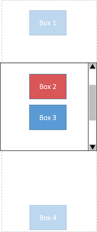
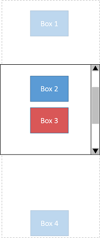
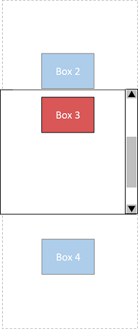
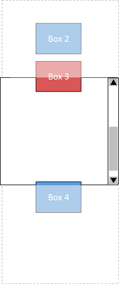
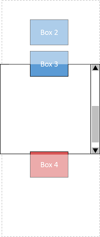
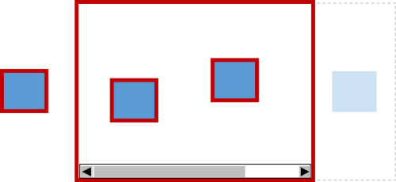
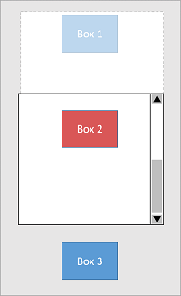
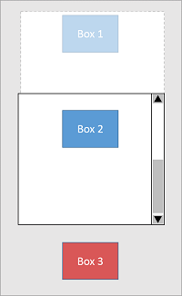
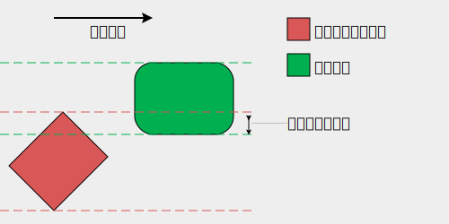
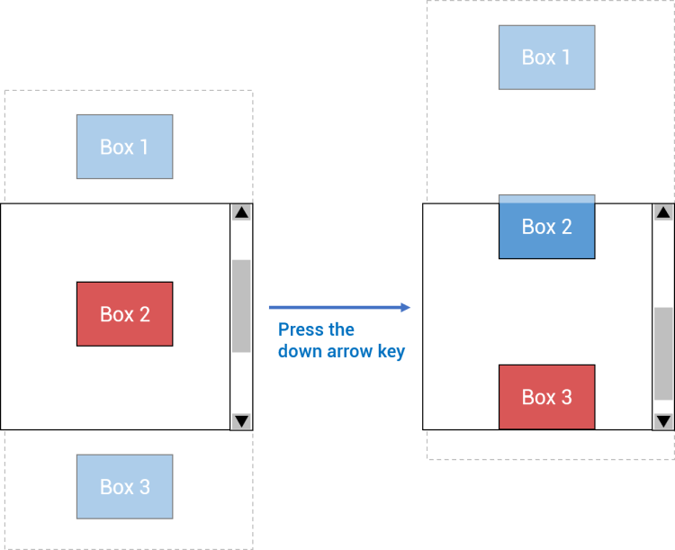
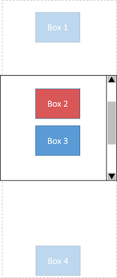
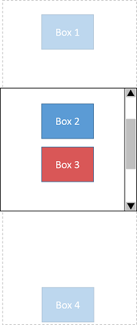
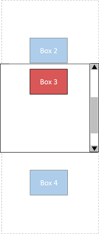
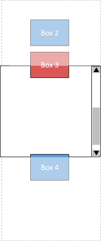
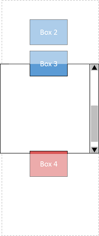
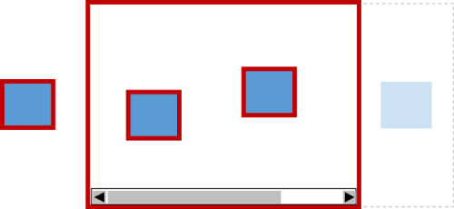
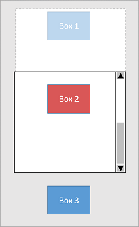
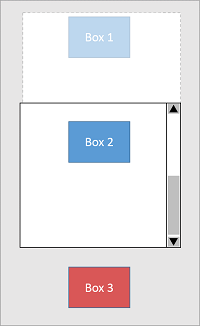
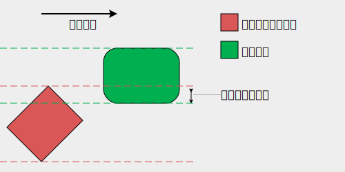
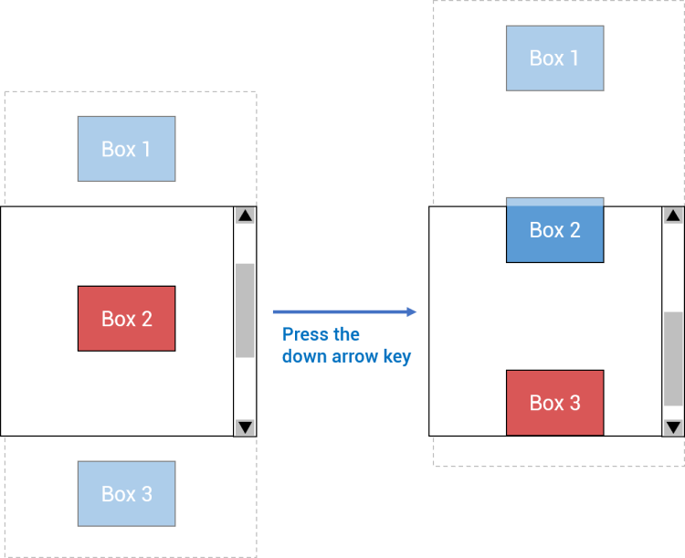
{kind=link}